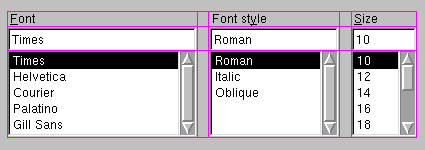

QGridLayout Class
The QGridLayout class lays out widgets in a grid. More...
| Header: | #include <QGridLayout> |
| CMake: | find_package(Qt6 REQUIRED COMPONENTS Widgets) target_link_libraries(mytarget PRIVATE Qt6::Widgets) |
| qmake: | QT += widgets |
| Inherits: | QLayout |
Properties
- horizontalSpacing : int
- verticalSpacing : int
Public Functions
| QGridLayout(QWidget *parent = nullptr) | |
| virtual | ~QGridLayout() |
| void | addItem(QLayoutItem *item, int row, int column, int rowSpan = 1, int columnSpan = 1, Qt::Alignment alignment = Qt::Alignment()) |
| void | addLayout(QLayout *layout, int row, int column, Qt::Alignment alignment = Qt::Alignment()) |
| void | addLayout(QLayout *layout, int row, int column, int rowSpan, int columnSpan, Qt::Alignment alignment = Qt::Alignment()) |
| void | addWidget(QWidget *widget, int row, int column, Qt::Alignment alignment = Qt::Alignment()) |
| void | addWidget(QWidget *widget, int fromRow, int fromColumn, int rowSpan, int columnSpan, Qt::Alignment alignment = Qt::Alignment()) |
| QRect | cellRect(int row, int column) const |
| int | columnCount() const |
| int | columnMinimumWidth(int column) const |
| int | columnStretch(int column) const |
| void | getItemPosition(int index, int *row, int *column, int *rowSpan, int *columnSpan) const |
| int | horizontalSpacing() const |
| QLayoutItem * | itemAtPosition(int row, int column) const |
| Qt::Corner | originCorner() const |
| int | rowCount() const |
| int | rowMinimumHeight(int row) const |
| int | rowStretch(int row) const |
| void | setColumnMinimumWidth(int column, int minSize) |
| void | setColumnStretch(int column, int stretch) |
| void | setHorizontalSpacing(int spacing) |
| void | setOriginCorner(Qt::Corner corner) |
| void | setRowMinimumHeight(int row, int minSize) |
| void | setRowStretch(int row, int stretch) |
| void | setVerticalSpacing(int spacing) |
| int | verticalSpacing() const |
Reimplemented Public Functions
| virtual int | count() const override |
| virtual Qt::Orientations | expandingDirections() const override |
| virtual bool | hasHeightForWidth() const override |
| virtual int | heightForWidth(int w) const override |
| virtual void | invalidate() override |
| virtual QLayoutItem * | itemAt(int index) const override |
| virtual QSize | maximumSize() const override |
| virtual int | minimumHeightForWidth(int w) const override |
| virtual QSize | minimumSize() const override |
| virtual void | setGeometry(const QRect &rect) override |
| virtual void | setSpacing(int spacing) override |
| virtual QSize | sizeHint() const override |
| virtual int | spacing() const override |
| virtual QLayoutItem * | takeAt(int index) override |
Reimplemented Protected Functions
| virtual void | addItem(QLayoutItem *item) override |
Detailed Description
QGridLayout takes the space made available to it (by its parent layout or by the parentWidget()), divides it up into rows and columns, and puts each widget it manages into the correct cell.
Columns and rows behave identically; we will discuss columns, but there are equivalent functions for rows.
Each column has a minimum width and a stretch factor. The minimum width is the greatest of that set using setColumnMinimumWidth() and the minimum width of each widget in that column. The stretch factor is set using setColumnStretch() and determines how much of the available space the column will get over and above its necessary minimum.
Normally, each managed widget or layout is put into a cell of its own using addWidget(). It is also possible for a widget to occupy multiple cells using the row and column spanning overloads of addItem() and addWidget(). If you do this, QGridLayout will guess how to distribute the size over the columns/rows (based on the stretch factors).
To remove a widget from a layout, call removeWidget(). Calling QWidget::hide() on a widget also effectively removes the widget from the layout until QWidget::show() is called.
This illustration shows a fragment of a dialog with a five-column, three-row grid (the grid is shown overlaid in magenta):

Columns 0, 2 and 4 in this dialog fragment are made up of a QLabel, a QLineEdit, and a QListBox. Columns 1 and 3 are placeholders made with setColumnMinimumWidth(). Row 0 consists of three QLabel objects, row 1 of three QLineEdit objects and row 2 of three QListBox objects. We used placeholder columns (1 and 3) to get the right amount of space between the columns.
Note that the columns and rows are not equally wide or tall. If you want two columns to have the same width, you must set their minimum widths and stretch factors to be the same yourself. You do this using setColumnMinimumWidth() and setColumnStretch().
If the QGridLayout is not the top-level layout (i.e. does not manage all of the widget's area and children), you must add it to its parent layout when you create it, but before you do anything with it. The normal way to add a layout is by calling addLayout() on the parent layout.
Once you have added your layout you can start putting widgets and other layouts into the cells of your grid layout using addWidget(), addItem(), and addLayout().
QGridLayout also includes two margin widths: the contents margin and the spacing(). The contents margin is the width of the reserved space along each of the QGridLayout's four sides. The spacing() is the width of the automatically allocated spacing between neighboring boxes.
The default contents margin values are provided by the style. The default value Qt styles specify is 9 for child widgets and 11 for windows. The spacing defaults to the same as the margin width for a top-level layout, or to the same as the parent layout.
See also QBoxLayout, QStackedLayout, Layout Management, and Basic Layouts Example.
Property Documentation
horizontalSpacing : int
This property holds the spacing between widgets that are laid out side by side
If no value is explicitly set, the layout's horizontal spacing is inherited from the parent layout, or from the style settings for the parent widget.
Access functions:
| int | horizontalSpacing() const |
| void | setHorizontalSpacing(int spacing) |
See also verticalSpacing, QStyle::pixelMetric(), and PM_LayoutHorizontalSpacing.
verticalSpacing : int
This property holds the spacing between widgets that are laid out on top of each other
If no value is explicitly set, the layout's vertical spacing is inherited from the parent layout, or from the style settings for the parent widget.
Access functions:
| int | verticalSpacing() const |
| void | setVerticalSpacing(int spacing) |
See also horizontalSpacing, QStyle::pixelMetric(), and PM_LayoutHorizontalSpacing.
Member Function Documentation
[explicit] QGridLayout::QGridLayout(QWidget *parent = nullptr)
Constructs a new QGridLayout with parent widget, parent. The layout has one row and one column initially, and will expand when new items are inserted.
The layout is set directly as the top-level layout for parent. There can be only one top-level layout for a widget. It is returned by QWidget::layout().
If parent is nullptr, then you must insert this grid layout into another layout, or set it as a widget's layout using QWidget::setLayout().
See also QWidget::setLayout().
[virtual noexcept] QGridLayout::~QGridLayout()
Destroys the grid layout. Geometry management is terminated if this is a top-level grid.
The layout's widgets aren't destroyed.
void QGridLayout::addItem(QLayoutItem *item, int row, int column, int rowSpan = 1, int columnSpan = 1, Qt::Alignment alignment = Qt::Alignment())
Adds item at position row, column, spanning rowSpan rows and columnSpan columns, and aligns it according to alignment. If rowSpan and/or columnSpan is -1, then the item will extend to the bottom and/or right edge, respectively. The layout takes ownership of the item.
Warning: Do not use this function to add child layouts or child widget items. Use addLayout() or addWidget() instead.
[override virtual protected] void QGridLayout::addItem(QLayoutItem *item)
Reimplements: QLayout::addItem(QLayoutItem *item).
void QGridLayout::addLayout(QLayout *layout, int row, int column, Qt::Alignment alignment = Qt::Alignment())
Places the layout at position (row, column) in the grid. The top-left position is (0, 0).
The alignment is specified by alignment. The default alignment is 0, which means that the widget fills the entire cell.
A non-zero alignment indicates that the layout should not grow to fill the available space but should be sized according to sizeHint().
layout becomes a child of the grid layout.
void QGridLayout::addLayout(QLayout *layout, int row, int column, int rowSpan, int columnSpan, Qt::Alignment alignment = Qt::Alignment())
This is an overloaded function.
This version adds the layout layout to the cell grid, spanning multiple rows/columns. The cell will start at row, column spanning rowSpan rows and columnSpan columns.
If rowSpan and/or columnSpan is -1, then the layout will extend to the bottom and/or right edge, respectively.
void QGridLayout::addWidget(QWidget *widget, int row, int column, Qt::Alignment alignment = Qt::Alignment())
Adds the given widget to the cell grid at row, column. The top-left position is (0, 0) by default.
The alignment is specified by alignment. The default alignment is 0, which means that the widget fills the entire cell.
void QGridLayout::addWidget(QWidget *widget, int fromRow, int fromColumn, int rowSpan, int columnSpan, Qt::Alignment alignment = Qt::Alignment())
This is an overloaded function.
This version adds the given widget to the cell grid, spanning multiple rows/columns. The cell will start at fromRow, fromColumn spanning rowSpan rows and columnSpan columns. The widget will have the given alignment.
If rowSpan and/or columnSpan is -1, then the widget will extend to the bottom and/or right edge, respectively.
QRect QGridLayout::cellRect(int row, int column) const
Returns the geometry of the cell with row row and column column in the grid. Returns an invalid rectangle if row or column is outside the grid.
Warning: in the current version of Qt this function does not return valid results until setGeometry() has been called, i.e. after the parentWidget() is visible.
int QGridLayout::columnCount() const
Returns the number of columns in this grid.
int QGridLayout::columnMinimumWidth(int column) const
Returns the column spacing for column column.
See also setColumnMinimumWidth().
int QGridLayout::columnStretch(int column) const
Returns the stretch factor for column column.
See also setColumnStretch().
[override virtual] int QGridLayout::count() const
Reimplements: QLayout::count() const.
[override virtual] Qt::Orientations QGridLayout::expandingDirections() const
Reimplements: QLayout::expandingDirections() const.
void QGridLayout::getItemPosition(int index, int *row, int *column, int *rowSpan, int *columnSpan) const
Returns the position information of the item with the given index.
The variables passed as row and column are updated with the position of the item in the layout, and the rowSpan and columnSpan variables are updated with the vertical and horizontal spans of the item.
See also itemAtPosition() and itemAt().
[override virtual] bool QGridLayout::hasHeightForWidth() const
Reimplements: QLayoutItem::hasHeightForWidth() const.
[override virtual] int QGridLayout::heightForWidth(int w) const
Reimplements: QLayoutItem::heightForWidth(int) const.
[override virtual] void QGridLayout::invalidate()
Reimplements: QLayout::invalidate().
[override virtual] QLayoutItem *QGridLayout::itemAt(int index) const
Reimplements: QLayout::itemAt(int index) const.
QLayoutItem *QGridLayout::itemAtPosition(int row, int column) const
Returns the layout item that occupies cell (row, column), or nullptr if the cell is empty.
See also getItemPosition() and indexOf().
[override virtual] QSize QGridLayout::maximumSize() const
Reimplements: QLayout::maximumSize() const.
[override virtual] int QGridLayout::minimumHeightForWidth(int w) const
Reimplements: QLayoutItem::minimumHeightForWidth(int w) const.
[override virtual] QSize QGridLayout::minimumSize() const
Reimplements: QLayout::minimumSize() const.
Qt::Corner QGridLayout::originCorner() const
Returns the corner that's used for the grid's origin, i.e. for position (0, 0).
See also setOriginCorner().
int QGridLayout::rowCount() const
Returns the number of rows in this grid.
int QGridLayout::rowMinimumHeight(int row) const
Returns the minimum width set for row row.
See also setRowMinimumHeight().
int QGridLayout::rowStretch(int row) const
Returns the stretch factor for row row.
See also setRowStretch().
void QGridLayout::setColumnMinimumWidth(int column, int minSize)
Sets the minimum width of column column to minSize pixels.
See also columnMinimumWidth() and setRowMinimumHeight().
void QGridLayout::setColumnStretch(int column, int stretch)
Sets the stretch factor of column column to stretch. The first column is number 0.
The stretch factor is relative to the other columns in this grid. Columns with a higher stretch factor take more of the available space.
The default stretch factor is 0. If the stretch factor is 0 and no other column in this table can grow at all, the column may still grow.
An alternative approach is to add spacing using addItem() with a QSpacerItem.
See also columnStretch() and setRowStretch().
[override virtual] void QGridLayout::setGeometry(const QRect &rect)
Reimplements: QLayout::setGeometry(const QRect &r).
void QGridLayout::setOriginCorner(Qt::Corner corner)
Sets the grid's origin corner, i.e. position (0, 0), to corner.
See also originCorner().
void QGridLayout::setRowMinimumHeight(int row, int minSize)
Sets the minimum height of row row to minSize pixels.
See also rowMinimumHeight() and setColumnMinimumWidth().
void QGridLayout::setRowStretch(int row, int stretch)
Sets the stretch factor of row row to stretch. The first row is number 0.
The stretch factor is relative to the other rows in this grid. Rows with a higher stretch factor take more of the available space.
The default stretch factor is 0. If the stretch factor is 0 and no other row in this table can grow at all, the row may still grow.
See also rowStretch(), setRowMinimumHeight(), and setColumnStretch().
[override virtual] void QGridLayout::setSpacing(int spacing)
Reimplements an access function for property: QLayout::spacing.
This function sets both the vertical and horizontal spacing to spacing.
See also spacing(), setVerticalSpacing(), and setHorizontalSpacing().
[override virtual] QSize QGridLayout::sizeHint() const
Reimplements: QLayoutItem::sizeHint() const.
[override virtual] int QGridLayout::spacing() const
Reimplements an access function for property: QLayout::spacing.
If the vertical spacing is equal to the horizontal spacing, this function returns that value; otherwise it return -1.
See also setSpacing(), verticalSpacing(), and horizontalSpacing().
[override virtual] QLayoutItem *QGridLayout::takeAt(int index)
Reimplements: QLayout::takeAt(int index).